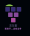

P O D O F A R M
포도 농사원
링크 걸어야함
최근활동
2 hours ago
> 우종호님이 숫자 구하기 문제를 풀었습니다!
스터디명 : 여길 찍어주는건데
스터디 코드 : 423123
회원아이디 : 123213
이번 달 포도농사
포도 농사원 : 우종호, 조현주 , 김경선, 이곳은 데이터에 따라 달라지도록
DECEMBER
1
2
3
4
5
6
7
8
9
10
11
12
13
14
15
16
17
18
19
20
21
22
23
24
25
26
27
28
29
30
31
서버에 따라 다르게 적용
less
more